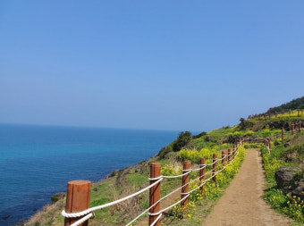

📍 조천
1) 감사공묘역(곁벚꽃)
하나를 찍어주고 싶은 이쁜 곁벚꽃 있는 유적지야
2) 낙선경로당(곁벚꽃)
여기는 경로당인데 곁벚꽃이 이쁘게 있어서 이쁘대!
3) 서우봉(유채꽃)
손잡고 산책하며 오름과 유채꽃을 볼 수 있는 장소야!

하나를 찍어주고 싶은 이쁜 곁벚꽃 있는 유적지야
여기는 경로당인데 곁벚꽃이 이쁘게 있어서 이쁘대!
손잡고 산책하며 오름과 유채꽃을 볼 수 있는 장소야!
여기는 유채꽃이 이쁘게 있는 곳 중 하나야!
바다와 유채꽃을 같이 보고싶다면 여기!
대충 이쁜 나무 있는 곳이야! 폭삭 속았수다 느낌쓰
다양한 꽃(하나)가 있는곳이야!
성산일출봉과 넓게 핀 유채꽃이 있는 공간이야.
봄이면 갯우꽃이 만발하는 드넓은 들판, 사진 명소로 인기가 높대!